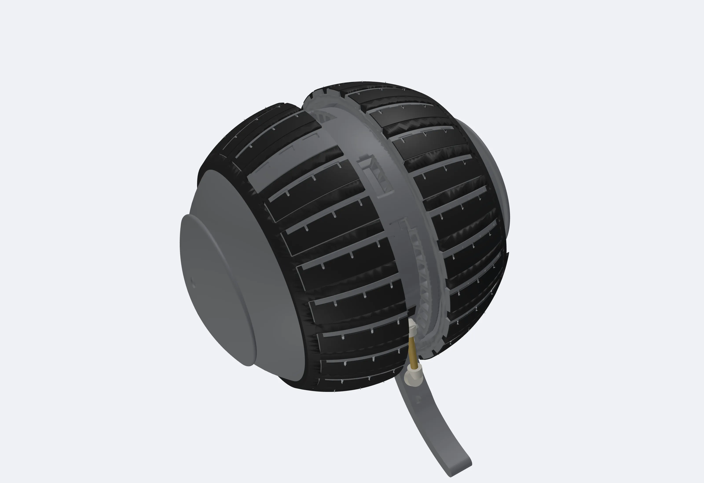
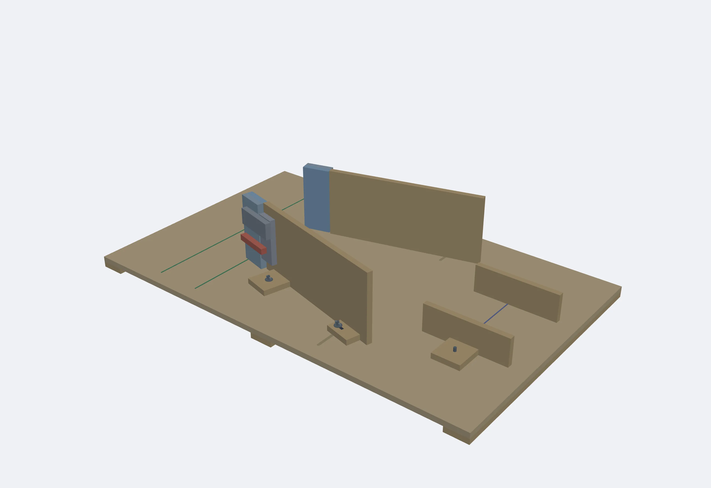

01 / Shape
Adjust each side separately
The same total width can be reached by drawing both wheels inward equally, or by drawing one side in farther. That difference is the variable I want to test.
Can changing shape help a robot get unstuck?
I'm developing a small, variable-width robot for confined-space search, along with the experiment to find out when narrowing helps it escape.

The mechanism
The hemispherical shells act as wheels, while the central core holds the electronics. Moving the wheels inward changes the robot's width without changing the core.
01 / Shape
The same total width can be reached by drawing both wheels inward equally, or by drawing one side in farther. That difference is the variable I want to test.
02 / Sensing
The planned controller uses left/right width-adjustment servo-current proxies to choose which side to narrow. Load cells on the test fixture provide an independent force reference. Whether that choice is accurate remains an open question.
03 / Scope
The broader concept is a deployable spherical search robot. The first prototype instead uses a fixed, braced tail. Folding, throwing, durability and real-world rescue performance have not been physically demonstrated.
Renders come from the November CAD, including the November 8 tail brace. Widths are nominal commanded dimensions, not measured contact widths. The hemispherical-wheel mechanism has prior art; the research focus is the escape strategy, not a claim to invent the mechanism.
The research question
When a robot enters a converging passage off-center, can contact-responsive asymmetric narrowing help it escape, compared with symmetric narrowing at the same total width reduction?
NONE
Keep both sides fully extended. No narrowing response.
161.5 mm fixedMIN
Begin at the minimum width. No further change.
136.5 mm fixedSYM
After a jam, reduce left and right equally.
5 + 5 mm / first stepASYM
Reduce the side selected by the current proxy first.
10 mm / first stepSYM and ASYM use the same total reduction per step, retrying after each jam until passage or the minimum width. The last step uses only the remaining travel. This separates the effect of asymmetry from simply making the robot narrower.

Planned comparison
Two total funnel angles (20° and 30°), two entry conditions (centered and one wall first), four modes, six repeats. Entry offsets and the exit gap are finalized in preliminary testing, not assumed from CAD.
Measured outcome
Success means the marked core center crosses a line 100 mm beyond the actual exit within 60 seconds. Video judges the result; it is not controller input. No remote steering is allowed in this test.
What would count as evidence?
I'll compare passage, time, final width and narrowing steps, with force-reference checks of the selected side. Tipping, safety stops and timeouts remain distinct outcomes. An asymmetric advantage is a hypothesis, not a result.
Work in progress · November 10, 2026
The design and software have checkable outputs. Physical testing is the next standard they need to meet.
Design developed
Detailed CAD covers the wheel-spacing mechanism, electronics sled, harness and braced tail, alongside the adjustable floor funnel. Manufacturing fit, material samples and assembly checks still have to be verified on real parts.
Software checked
The current firmware has 2,479 dynamic host tests, 10 static guards and five compiled targets recorded. Those are software-side checks, not proof that the hardware or escape controller works on the bench.
Next / Physical validation
Complete fabrication and incoming inspection, assemble safely, validate power and control on the bench, then calibrate the fixture before collecting physical trials. No escape success rate is reported yet.
This page reflects the November 10 execution guide, November 9 floor-funnel protocol and FW10 status. Simulation and keyframed CAD explanations inform the design; neither is presented as physical evidence.
Completed work
Model bridges, public full-scale data, and two real footbridges.